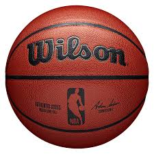
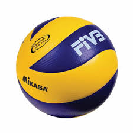
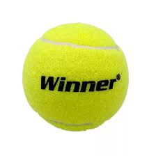

Datos Personales
Nombre: Gisel Arestegui
Edad: 16 años
Ubicación: Bogotá, Colombia
Profesión: Estudiante de Laboratorio Clínico
Actividades Deportivas
Fútbol
Juego en un equipo local y entreno tres veces por semana. Me gusta trabajar en equipo y mejorar la estrategia de juego.

Básquet
Participo en torneos universitarios. Me gusta el dinamismo del juego y practicar lanzamientos de tres puntos.
Vóley
Juegos amistosos cada fin de semana con amigos. Ayuda a mejorar mi coordinación y trabajo en grupo.
Tenis
Entreno dos veces por semana. Es un deporte que me reta individualmente y mejora mi agilidad mental.
Actividades Académicas
Participo activamente en proyectos de investigación y desarrollo tecnológico.
A continuación, un video de una presentación académica reciente:
Actividades Familiares
- Cenas familiares los domingos
- Viajes familiares cada 6 meses
- Organización de eventos familiares
Contacto
Correo: gisel.arestegui@email.com
Teléfono: 980231345
Instagram: @giselxtlv